대기환경기사 (2014-09-20 기출문제)
1과목: 대기오염 개론
1. 맑은 여름날 해가 뜬 후부터 오후 최고기온이 나타나는 시간까지의 연기의 분산형을 순서대로 가장 적합하게 나타낸 것은?
- fanning → fumigation → coning → looping
- fanning → looping → coning → lofting
- fanning → looping → fumigation → lofting
- fanning → trapping → looping → coning
(정답률: 72%)

2. 가우시안 모델에 도입된 가정조건으로 거리가 먼 것은?
- 연기의 분산은 정상상태 분포를 가정한다.
- 바람에 의한 오염물의 주 이동방향은 X축이며, 풍속은 일정하다.
- 연직방향의 풍속은 통상 수평방향의 풍속보다 크므로 고도변화에 따라 반영 한다.
- 난류확산계수는 일정하다.
(정답률: 73%)
3. 대기오염물질의 분산을 예측하기 위한 바람장미(Wind rose)에 관한 설명으로 가장 거리가 먼 것은?
- 풍속이 1m/sec 이하일 때를 정온(calm) 상태로 본다.
- 바람장미는 풍향별로 관측된 바람의 발생빈도와 풍속을 16방향으로 표시한 기상도형이다.
- 관측된 풍향별 발생빈도를 %로 표시한 것을 방향량(vector)이라 한다.
- 가장 빈번히 관측된 풍향을 주풍(prevailing wind)이라 하고, 막대의 길 이를 가장 길게 표시한다.
(정답률: 82%)
4. 라돈에 관한 설명으로 가장 거리가 먼 것은?
- 일반적으로 인체의 조혈기능 및 중추신경계통에 가장 큰 영향을 미치는 것으로 알려져 있으며, 화학적으로 반응성이 크다.
- 무색, 무취의 기체로 액화되어도 색을 띠지 않는 물질이다.
- 공기보다 9배 정도 무거워 지표에 가깝게 존재한다.
- 주로 토양, 지하수, 건축자재 등을 통하여 인체에 영향을 미치고 있으며 흙속에서 방사선 붕괴를 일으킨다.
(정답률: 84%)
5. 다음 기체 중 비중이 가장 적은 것은? (단, 동일한 조건)
- NH3
- NO
- H2S
- SO2
(정답률: 80%)
6. 국지풍에 관한 설명으로 옳지 않은 것은?
- 낮에 바다에서 육지로 부는 해풍은 밤에 육지에서 바다로 부는 육풍보다 강한 것이 보통이다.
- 곡풍은 경사면 → 계곡 → 주계곡으로 수렴하면서 풍속이 가속되기 때문에 낮에 산 위쪽으로 부는 산풍보다 더 강하게 부는 것이 보통이다.
- 열섬효과로 인해 도시의 중심부가 주위보다 더 고온이 되어 도시 중심부에서 상승기류가 발생하고 도시 주위의 시골에서 도시로 부는 바람을 전원풍이라 한다.
- 휀풍은 산맥의 정상을 기준으로 풍상쪽 경사면을 따라 공기가 상승하면서 건조단열 변화를 하기 때문에 평지에서보다 기온이 약 1℃/100m 율로 하강 한다.
(정답률: 68%)
7. 다음 대기오염물질과 관련되는 주요 배출업종을 연결한 것으로 가장 적합한 것은?
- 벤젠 - 도장공업
- 염소 - 주유소
- 시안화수소 - 유리공업
- 이황화탄소 - 구리정련
(정답률: 75%)
8. 상대습도가 70%이고, 상수를 1.2로 정의할 때, 먼지농도가 70㎍/m3 이면, 가시거리는 얼마인가?
- 약 12km
- 약 17km
- 약 22km
- 약 27km
(정답률: 75%)
9. 실내공기 오염물질에 관한 설명으로 옳지 않은 것은?
- 벤젠은 무색의 휘발성 액체이며, 끓는점은 약 80℃ 정도이고, 인화성이 강하다.
- 석면은 얇고 긴 섬유의 형태로서 규소, 수소, 마그네슘, 철, 산소 등의 원소를 함유하며, 그 기본구조는 산화규소의 형태를 취한다.
- 석면의 공업적 생산 및 소비량은 각섬석계열이 95% 정도이고, 나머지가 사문석 계열로서 강도는 높으나 굴절성은 약하다.
- 톨루엔의 끓는점은 약 111℃ 정도이고, 휘발성이 강하고 그 증기는 폭발성이 있다.
(정답률: 70%)
10. 스테판-볼츠만의 법칙에 따르면 흑체복사를 하는 물체에서 물체의 표면 온도가 1500K에서 1897K로 변화된다면, 복사에너지는 몇 배로 변화되는가?
- 1.25 배
- 1.33 배
- 2.56 배
- 3.16 배
(정답률: 68%)
11. 다음 중 가장 높은 압력을 나타내는 것은?
- 15 psi
- 76 kPa
- 76 torr
- 1000 mbar
(정답률: 61%)
12. 냄새감도에 관한 설명 중 ( )안에 가장 알맞은 것은?
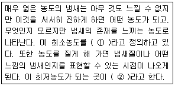
- ① 최소감지농도(Detection threshold), ② 최소포착농도(Capture threshold)
- ① 최소인지농도(Recognition threshold), ② 최소자각농도(Awareness threshold)
- ① 최소인지농도(Recognition threshold), ② 최소포착농도(Capture threshold)
- ① 최소감지농도(Detection threshold), ② 최소인지농도(Recognition threshold)
(정답률: 81%)
13. 2000m에서 대기압력(최초 기압)이 8⑤mbar, 온도가 5℃, 비열비 K가 1.4일 때 온위(Potential temperature)는? (단, 표준압력은 1000mbar)
- 약 284K
- 약 289K
- 약 296K
- 약 324K
(정답률: 73%)
14. 지상으로부터 500m 까지의 평균 기온감률은 1.2℃/100m 이다. 100m 고도에서의 기온이 18℃일 때 400m에서의 기온은?
- 8.6℃
- 10.8℃
- 12.2℃
- 14.4℃
(정답률: 67%)
15. 리차드슨 수에 관한 설명으로 옳은 것은?
- 리차드슨 수가 -0.04보다 작으면 수직방향의 혼합은 없다.
- 리차드슨 수가 0 이면 기계적 난류만 존재한다.
- 리차드슨 수가 0 에 접근하면 분산이 커져 대류혼합이 지배적이다.
- 일차원 수로서 기계난류를 대류난류로 전환시키는 율을 측정한 것이다.
(정답률: 78%)
16. 다음 특정물질 중 오존파괴지수가 가장 큰 것은?
- CFC-113
- CFC-114
- Halon-1211
- Halon-1301
(정답률: 83%)
17. 직경 4m인 굴뚝에서 연기가 10m/s의 속도로 풍속 5m/s인 대기로방출된다. 대기는 27℃, 중립상태(
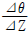
= 0)이고, 연기의 온도가 167℃ 일 때 TVA모델에 의한 연기의 상승고(m)? (단, TVA 모델 : ⊿H =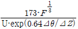
부력계수 F = [g·Vs·d2·(Ts-Ta)]/4Ta 를 이용할 것)- 약 196 m
- 약 165 m
- 약 145 m
- 약 124 m
(정답률: 67%)
18. 혼합층에 관한 설명으로 가장 적합한 것은?
- 최대혼합깊이는 통상 낮에 가장 적고, 밤시간을 통하여 점차 증가한다.
- 야간에 역전이 극심한 경우 최대혼합깊이는 5000m 정도까지 증가한다.
- 계절적으로 최대혼합깊이는 주로 겨울에 최소가 되고 이른 여름에 최대값을 나타낸다.
- 환기량은 혼합층의 온도와 혼합층내의 평균풍속을 곱한 값으로 정의된다.
(정답률: 75%)
19. 굴뚝에서 배출되는 연기의 형태 중 looping 형에 관한 설명으로 옳은 것은?
- 전체 대기층이 강한 안정시에 나타나며, 연직확산이 적어 지표면에 순간적 고농도를 나타낸다.
- 전체 대기층이 중립일 경우에 나타나며, 연기모양의 요동이 적은편이다.
- 과단열감률 상태의 대기일 때 나타나므로 맑은 날 오후에 발생하기 쉽다.
- 상층이 불안정, 하층이 안정일 경우에 나타나며, 바람이 다소 강하거나 구름이 낀 날 일어난다.
(정답률: 64%)
20. 휘발성이 높은 액체이므로 쉽게 작업실내의 농도가 높아져 중추신경계에 대한 특징적인 독성작용으로 심한 급성 또는 아급성 뇌병증을 유발하며, 피부를 통해서도 흡수되지만 대부분 상기도를 통해 체내에 흡수되는 것은?
- 삼염화에틸렌
- 염화비닐
- 이황화탄소
- 아크릴 아미드
(정답률: 57%)
2과목: 연소공학
21. 석탄·석유 혼합연료(COM)에 관한 설명으로 가장 적합한 것은?
- 중유에다 거의 같은 질량의 미분탄을 섞어서 고체화시킨 연료이다.
- 열량비로 COM 중의 석탄의 비율은 5% 정도로 석유비율이 큰 편이다.
- 별도의 중유전용 연소시설을 이용하지 않는 것이 큰 장점이다.
- 유해성분을 포함하고 있으므로 재와 매연처리, 연소가스의 연소실내 체류시간을 미분탄 정도로 고려할 필요가 있다.
(정답률: 45%)
22. Propane 1Sm3을 연소시킬 경우 이론 건조연소 가스 중의 탄산가스 최대농도(%)는?
- 12.8%
- 13.8%
- 14.8%
- 15.8%
(정답률: 62%)
23. 어떤 1차 반응에서 반감기가 10분 이었다. 반응물이 1/10 농도로 감소할 때까지는 얼마의 시간이 걸리겠는가?
- 6.9min
- 33.2min
- 693min
- 3323min
(정답률: 66%)
24. 액체연료의 종류 및 성질에 관한 설명으로 옳지 않은 것은?
- 휘발유는 석유제품 중 가장 경질이며, 비점은 약 250-350℃ 정도, 비중은 0.85-0.90 정도이다.
- 등유는 휘발유와 유사한 방법으로 정제하며 무색내지 담황색이고, 인화점은 휘발유보다 높다.
- 경유의 착화성 여부는 세탄값으로 표시되며, 세탄값 40-60 정도의 것이 좋은 편이다.
- 중유 점도의 정도는 C중유 ＞ B중유 ＞ A중유 순으로 감소되며, 수송 시 적정점도는 500-1000 cSt 정도이다.
(정답률: 54%)
25. 석유의 물리적 성질에 관한 설명으로 옳지 않은 것은?
- 비중이 커지면 화염의 휘도가 커지며, 점도도 증가한다.
- 증기압이 높으면 인화점이 높아져서 연소효율이 저하된다.
- 유동점(pour point)은 일반적으로 응고점보다 2.5℃ 높은 온도를 말한다.
- 점도가 낮아지면 인화점이 낮아지고 연소가 잘된다.
(정답률: 61%)
26. 석탄의 성질에 관한 설명으로 옳지 않은 것은?
- 비열은 석탄화도가 진행됨에 따라 증가하며, 통상 0.30-0.35kcal/kg·℃ 정도이다.
- 건조된 것은 석탄화도가 진행된 것일수록 착화온도가 상승한다.
- 석탄류의 비중은 석탄화도가 진행됨에 따라 증가되는 경향을 보인다.
- 착화온도는 수분함유량에 영향을 크게 받으며, 무연탄의 착화온도는 보통 440-550℃ 정도이다.
(정답률: 50%)
27. 다음은 연소의 종류에 관한 설명이다. ( )안에 알맞은 것은?
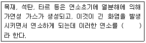
- 표면연소
- 분해연소
- 자기연소
- 확산연소
(정답률: 60%)
28. 아세틸렌이 완전연소할 때의 이론공연비(A/F ratio, 부피비)는?
- 2.5
- 8.9
- 11.9
- 25
(정답률: 61%)
29. 저위발열량이 5000kcal/Sm3의 기체연료의 이론 연소온도(℃)는? (단, 이론연소가스량 15Sm3/Sm3, 연료연소가스의 평균정압비열 0.35kcal/Sm3·℃, 기준온도는 0℃, 공기는 예열하지 않으며, 연소가스는 해리되지 않는다고 본다.)
- 952
- 994
- 1008
- 1118
(정답률: 64%)
30. 다음 주요 기체연료 중 일반적으로 발열량이 가장 큰 것은? (단, 발열량단위 : kcal/Sm3)
- 발생로가스
- 고로가스
- 수성가스
- 아세틸렌
(정답률: 41%)
31. 절충식 방법으로써 연소용 공기의 일부를 미리 기체연료와 혼합하고 나머지 공기는 연소실 내에서 혼합하여 확산 연소시키는 방식으로 소형 또는 중소형 버너로 널리 사용되며, 기체연료 또는 공기의 분출속도에 의해 생기는 흡인력을 이용하여 공기 또는 연료를 흡인하는 것은?
- 확산연소
- 예혼합연소
- 유동층연소
- 부분예혼합연소
(정답률: 73%)
32. 다음 중 연료 연소시 매연발생에 관한 설명으로 옳지 않은 것은?
- 분해하기 쉽거나 산화하기 쉬운 탄화수소는 매연이 많이 발생되는 편이다.
- 연료의 C/H 비율이 작을수록 매연이 생기기 어려운 편이다.
- -C-C-의 탄소결합을 절단하는 것보다 탈수소가 용이한 쪽이 매연이 잘 발생되는 편이다.
- 탈수소, 중합 및 고리화합물 등과 같이 반응이 일어나기 쉬운 탄화수소 일수록 매연이 잘 생기는 편이다.
(정답률: 55%)
33. 다음은 가동화격자의 종류에 관한 설명이다. ( )안에 알맞은 것은?
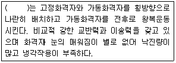
- 부채형 반전식 화격자
- 병렬요동식 화격자
- 이상식 화격자
- 회전 로울러식 화격자
(정답률: 74%)
34. 기체연료의 특징 및 종류에 관한 설명으로 옳지 않은 것은?
- 부하변동범위가 넓고 연소의 조절이 용이한 편이다.
- 천연가스는 화염전파속도가 크며, 폭발범위가 크므로 1차 공기를 적게 혼합하는 편이 유리하다.
- 액화천연가스는 메탄을 주성분으로 하는 천연가스를 1기압하에서 -160℃ 근처에서 냉각, 액화시켜 대량수송 및 저장을 가능하게 한 것이다.
- 액화석유가스는 액체에서 기체로 될 때 증발열(90-100kcal/kg)이 있으므로 사용하는데 유의할 필요가 있다.
(정답률: 54%)
35. 각종 연료의 (CO2)max 값(%)으로 거리가 먼 것은?
- 탄소 : 21.0
- 고로가스 : 24.0-25.0
- 역청탄 : 18.5-19.0
- 코우크스로 가스 : 19.0-20.0
(정답률: 50%)
36. 다음 각종 연료의 이론공기량의 개략치 값(Sm3/kg)으로 가장 거리가 먼 것은?
- 코우크스 : 0.8-1.2
- 고로가스 : 0.7-0.9
- 발생로 가스 : 0.9-1.2
- 가솔린 : 11.3-11.5
(정답률: 53%)
37. 과잉공기가 지나칠 때 나타나는 현상으로 거리가 먼 것은?
- 배기가스에 의한 열손실의 증가
- 연소실내 온도가 저하
- 배기가스의 온도가 높아지고 매연이 증가
- 배기가스 중 NOx량 증가
(정답률: 70%)
38. 다음은 화격자의 종류 중 폰 롤 시스템에 관한 설명이다. ( )안에 들어갈 말로 적합하지 않은 것은?
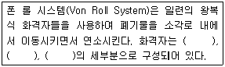
- 건조 화격자
- 회전 화격자
- 연소 화격자
- 후연소 화격자
(정답률: 56%)
39. 연료유를 미립화해서 공기와 혼합하여 단시간에 완전연소를 시키는 유류연소버너가 갖추어야 할 조건으로 가장 거리가 먼 것은?
- 넓은 부하범위에 걸쳐 기름의 미립화가 가능할 것
- 재를 제거하기 위한 장치가 있을 것
- 소음 발생이 적을 것
- 점도가 높은 기름도 적은 동력비로서 미립화가 가능할 것
(정답률: 52%)
40. C = 82%, H = 14%, S = 3%, N = 1%로 조성된 중유를 12Sm3 공기/kg 중유로 완전연소 했을 때 습윤 배출가스 중의 SO2는 약 몇 ppm 인가? (단, 중유 중의 황분은 모두 SO2로 된다)
- 1400
- 1640
- 1900
- 2260
(정답률: 54%)
3과목: 대기오염 방지기술
41. 다음 중 가스분산형 흡수장치로만 짝지어진 것은?
- 단탑, 기포탑
- 기포탑, 충전탑
- 분무탑, 단탑
- 분무탑, 충전탑
(정답률: 73%)
42. 각종 유해가스 처리법으로 가장 거리가 먼 것은?
- 아크로레인은 NaClO등의 산화제를 혼입한 가성소다 용액으로 흡수 제거한다.
- CO는 백금계의 촉매를 사용하여 연소시켜 제거한다.
- 이황화탄소는 암모니아를 불어넣는 방법으로 제거한다.
- Br2는 산성수용액에 의한 선정법으로 제거한다.
(정답률: 62%)
43. 다음은 활성탄의 고온 활성화 재생방법으로 적용될 수 있는 다단로(multi-hearth furnace)와 회전로(rotary kiln)의 비교표이다. 옳지 않은 것은?
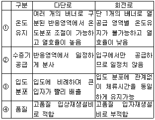
- ①
- ②
- ③
- ④
(정답률: 71%)
44. 전기집진장치의 장애현상 중 2차 전류가 많이 흐를 때의 원인으로 옳지 않은 것은?
- 먼지의 농도가 너무 낮을 때
- 공기 부하시험을 행할 때
- 방전극이 너무 가늘 때
- 이온 이동도가 적은 가스를 처리할 때
(정답률: 41%)
45. 중력집진장치에 관한 설명으로 가장 거리가 먼 것은?
- 압력손실이 10-15mmH2O 정도로 작다.
- 함진가스의 온도변화에 의한 영향을 거의 받지 않는다.
- 장치 운전 시 신뢰도가 낮으며, 함진가스의 먼지부하나 유량변동에 영향을 거의 받지 않아 적응성이 높다.
- 침강실의 높이는 작게, 길이는 가급적 크게 하는 편이 집진율이 향상된다.
(정답률: 48%)
46. 배출가스의 흐름이 층류일 때 입경 100㎛ 입자가 100% 침강하는데 필요한 중력 침강실의 길이는? (단, 중력 침전실의 높이 1`m, 배출가스의 유속 2m/s, 입자의 종말침강속도는 0.5m/s 이다.)
- 1m
- 4m
- 10m
- 16m
(정답률: 48%)
47. NOx와 SOx 동시 제어기술에 관한 설명으로 옳지 않은 것은?
- SOxNO 공정은 감마 알루미나 담체의 표면에 나트륨을 첨가하여 SOx와 NOx를 동시에 흡착시킨다.
- CuO 공정은 알루미나 담체에 CuO를 함침시켜 SO2는 흡착반응하고 NOx는 선택적 촉매환원되어 제거되는 원리를 이용하는 공정이다.
- CuO 공정에서 온도는 보통 850-1000℃ 정도로 조정하며, CuSO2 형태로 이동된 솔벤트 재생기에서 산소 또는 오존으로 재생된다.
- 활성탄 공정은 S, H2SO4 및 액상 SO2 등의 부산물이 생성되며, 공정 중 재가열이 없으므로 경제적이다.
(정답률: 57%)
48. 염소를 함유한 폐가스를 소석회와 반응시켜 생성되는 물질은?
- 실리카겔
- 표백분
- 차아염소산나트륨
- 포스겐
(정답률: 55%)
49. 다른 VOC 제거장치와 비교하여 생물여과의 장단점으로 가장 거리가 먼 것은?
- CO 및 NOx 등을 포함하여 생성되는 오염부산물이 적거나 없다.
- 습도제어에 각별한 주의가 필요하다.
- 고농도 오염물질의 처리에 적합하다.
- 생체량 증가로 인해 장치가 막힐 수 있다.
(정답률: 71%)
50. 촉매연소법에 관한 설명으로 거리가 먼 것은?
- 열소각법에 비해 체류시간이 훨씬 짧다.
- 열소각법에 비해 NOx 생성량을 감소시킬 수 있다.
- 팔라듐, 알루미나 등은 촉매에 바람직하지 않은 원소이다.
- 열소각법에 비해 점화온도를 낮춤으로써 전체 비용을 절감할 수 있다.
(정답률: 67%)
51. 전기집진장치를 구성하는 요소에 관한 설명으로 거리가 먼 것은?
- 방전극은 코로나 방전을 일으키기 쉽도록 가늘고 긴, 뾰족한 edge를 가질 것
- 방전극은 진동 혹은 요동을 일으키지 아니하는 구조일 것
- 집진전극 중 건식의 경우에는 취타에 의해 먼지 비산이 많이 생기도록 하는 구조일 것
- 집진극은 중량이 가벼울 것
(정답률: 63%)
52. 벤츄리스크러버의 액가스비를 크게 하는 요인으로 옳지 않은 것은?
- 먼지입자의 친수성이 클 때
- 먼지의 입경이 작을 때
- 먼지입자의 점착성이 클 때
- 처리가스의 온도가 높을 때
(정답률: 72%)
53. 집진효율이 70%인 1차 집진장치가 있다. 총집진효율이 98%이라면 2차 집진장치의 집진효율은?
- 91.1 %
- 93.3 %
- 94.8 %
- 96.5 %
(정답률: 63%)
54. 전기집진장치에서 먼지의 비저항이 높을 경우 발생하는 현상과 가장 거리가 먼 것은?
- 먼지와 집진판의 결합력이 낮아 먼지가 가스중으로 재비산된다.
- 역코로나 현상이 발생한다.
- 전하가 쉽게 집진판으로 전달되지 않는다.
- 가스 중 먼지입자의 이온화와 이동현상을 감소시킨다.
(정답률: 44%)
55. 배출가스 중 황산화물을 접촉식 황산제조방법의 원리를 이용한 촉매산화법으로 처리할 때 사용되는 일반적인 촉매로 가장 적합한 것은?
- PtO
- PbO2
- V2O5
- KMnO4
(정답률: 54%)
56. A 공장의 연마실에서 발생되는 배출가스의 먼지제거에 Cyclone이 사용되고 있다. 유입폭이 40cm 이고, 유효회전수 5회, 입구유입속도 10m/s로 가동중인 공정조건에서 10㎛ 먼지입자의 부분집진효율은 몇 % 인가? (단, 먼지의 밀도는 1.6g/cm3, 가스점도는 1.75×10-4g/cm·s, 가스밀도는 고려하지 않음)
- 약 40
- 약 45
- 약 50
- 약 55
(정답률: 30%)
57. 흡착제에 관한 설명으로 옳지 않은 것은?
- 마그네시아는 표면적이 50-100m2/g 으로 NaOH 용액 중 불순물 제거에 주로 사용된다.
- 활성탄은 표면적이 600-1400m2/g 으로 용제회수, 악취제거, 가스정화 등에 사용된다.
- 일반적으로 활성탄의 물리적 흡착방법으로 제거할 수 있는 유기성 가스의 분자량은 45 이상이어야 한다.
- 활성탄은 비극성물질을 흡착하며 대부분의 경우 유기용제 증기를 제거하는 데 탁월하다.
(정답률: 61%)
58. 싸이클론에서 50%의 집진효율로 제거되는 입자의 최소입경을 무엇이라 부르는가?
- critical diameter
- cut size diameter
- average size diameter
- analytical diameter
(정답률: 73%)
59. 공기 중 CO2 가스의 부피가 5%를 넘으면 인체에 해롭다고 한다면 지금 600m3 되는 방에서 문을 닫고 80%의 탄소를 가진 숯을 최소 몇 kg을 태우면 해로운 상태로 되겠는가? (단, 기존의 공기 중 CO2 가스의 부피는 고려하지 않음, 실내에서 완전혼합, 표준상태 기준)
- 약 5 kg
- 약 10 kg
- 약 15 kg
- 약 20 kg
(정답률: 42%)
60. 면적 1.5m2인 여과집진장치로 먼지농도가 1.5g/m3인 배기가스가 100m3/min으로 통과하고 있다. 먼지가 모두 여과포에서 제거되었으며, 집진된 먼지층의 밀도가 1g/cm3 라면 1시간 후 여과된 먼지층의 두께는?
- 1.5mm
- 3mm
- 6mm
- 15mm
(정답률: 49%)
4과목: 대기오염 공정시험기준(방법)
61. 배출가스 중 황산화물을 분석하기 위하여 중화적정법에 의해 술파민산 표준시약 2.0g을 물에 녹여 250mL로 하고, 이 용액 25mL를 분취하여 N/10-NaOH 용액으로 중화 적정한 결과 21.6mL가 소요되었다. 이 때 N/10-NaOH 용액의 factor 값은? (단, 술퍼민산의 분자량은 97.1 이다.)
- 0.90
- 0.95
- 1.00
- 1.⑤
(정답률: 42%)
62. 굴뚝 배출가스 중 수분측정을 위하여 흡습제에 10L의 시료를 흡인하여 유입시킨 결과 흡습제의 중량 증가가 0.8500g 이었다. 이 배출가스 중의 수증기 백분율은? (단, 건식가스미터의 흡인가스온도 : 27℃, 가스미터에서의 가스게이지압 + 대기압 : 760mmHg)
- 10.4%
- 9.5%
- 7.3%
- 5.5%
(정답률: 34%)
63. 원자흡수분광광도 분석을 위해 시료를 전처리 하고자 한다. "타르 기타 소량의 유기물을 함유하는 시료"의 전처리 방법으로 가정 거리가 먼 것은?
- 마이크로파 산분해법
- 저온 회화법
- 질산-염산법
- 질산-과산화수소수법
(정답률: 59%)
64. 자기분광광전광도계를 사용하여 과망간산칼륨 용액(20-60mg/L)의 흡수곡선을 작성할 경우 다음 중 흡광도 값이 최대가 나오는 파장범위는?
- 350 - 400 nm
- 400 - 450 nm
- 500 - 550 nm
- 600 - 650 nm
(정답률: 53%)
65. 흡광광도 분석장치에 관한 설명으로 거리가 먼 것은?(오류 신고가 접수된 문제입니다. 반드시 정답과 해설을 확인하시기 바랍니다.)
- 일반적으로 사용하는 흡광광도 분석장치는 광원부, 파장선택부, 시료부 및 측광부로 구성된다.
- 측광부로는 일반적으로 단색화장치(Monochrometer) 또는 필터(filter)를 사용하며, 단색화장치로는 프리즘, 회절격자 또는 이 두 가지를 조합시킨 것을 사용하며 단색광을 내기 위하여 슬릿(slit)을 탈착시킨다.
- 광전분광광도계에서는 미분측광, 2파장측광, 시차측광이 가능한 것도 있다.
- 흡수셀의 재질 중 유리제는 주로 가시 및 근적외부 파장범위, 석영제는 자외부 파장범위, 플라스틱제는 근적외부 파장범위를 측정할 때 사용한다.
(정답률: 45%)
66. 대기오염공정시험기준상 분석대상 가스에 대한 흡수액을 수산화나트륨으로 쓰지 않는 것은?
- 이황화탄소
- 불소화합물
- 염화수소
- 브롬화합물
(정답률: 58%)
67. 굴뚝반경(단면이 원형)이 3m인 경우, 배출가스 중 먼지측정을 위한 굴뚝 측정 점수로 적합한 것은?
- 20
- 16
- 12
- 8
(정답률: 62%)
68. 원자흡광광도법에서 측정조건 결정방법으로 가장 거리가 먼 것은?
- 감도가 가장 높은 스펙트럼선을 분석선으로 하는 것이 일반적이다.
- 양호한 SN비를 얻기 위하여 분광기의 슬릿 폭은 목적으로 하는 분석선을 분리할 수 있는 범위내에서 되도록 넓게 한다.(이웃의 스펙트럼선과 겹치지 않는 범위 내에서)
- 불꽃중에서 시료의 원자밀도 분포와 원소 불꽃의 상태 등에 따라 다르므로 불꽃의 최적위치에서 빛이 투과하도록 버어너의 위치를 조절한다.
- 일반적으로 광원램프의 전류값이 낮으면 램프의 감도가 떨어지는 등 수명이 감소하므로 광원램프는 장치의 성능이 허락하는 범위내에서 되도록 높은 전류값에서 동작시킨다.
(정답률: 54%)
69. 휘발성 유기화합물질(VOC) 누출확인방법에서 사용되는 용어정의로 옳지 않은 것은?
- 교정가스 : 미지 농도로 기기 표시치를 교정하는데 사용되는 VOC 화합물로서 일반적으로 누출농도와 다른 농도의 대조화합물이다.
- 반응인자 : 관련규정에 명시된 대조화합물로 교정된 기기를 이용하여 측정할 때 관측된 측정값과 VOC 화합물 기지농도와의 비율이다.
- 교정 정밀도 : 기지의 농도값과 측정값간의 평균차이를 상대적인 퍼센트로 표현하는 것으로서, 동일한 기지 농도의 측정값들의 일치정도이다.
- 응답시간 : VOC가 시료채취장치로 들어가 농도 변화를 일으키기 시작하여 기기계기판의 최종값이 90%를 나타내는데 걸리는 시간이다.
(정답률: 40%)
70. 다음은 굴뚝 배출가스 중의 질소산화물에 대한 아연 환원나프틸에틸렌디아민 분석방법이다. ( )안에 들아갈 말로 올바르게 연결된 것은?(순서대로 ① - ② - ③)
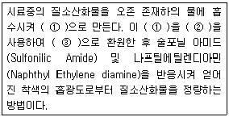
- 아질산이온 - 분말금속아연 - 질산이온
- 아질산이온 - 분말황산아연 - 질산이온
- 질산이온 - 분말황산아연 - 아질산이온
- 질산이온 - 분말금속아연 - 아질산이온
(정답률: 62%)
71. 다음은 비분산 적외선가스 분석계의 성능기준이다. ( )안에 알맞은 것은?
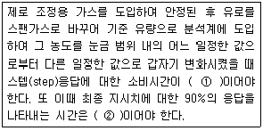
- ① 10초 이내, ② 30초 이내
- ① 10초 이내, ② 40초 이내
- ① 1초 이내, ② 30초 이내
- ① 1초 이내, ② 40초 이내
(정답률: 60%)
72. 다음 설명은 대기오염공정시험기준 총칙의 설명이다. ( )안에 들어갈 단어로 가장 적합하게 나열된 것은?(순서대로 ①, ②, ③)
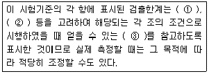
- 반복성, 정밀성, 바탕치
- 재현성, 안정성, 한계치
- 회복성, 정량성, 오차
- 재생성, 정확성, 바탕치
(정답률: 68%)
73. 가스크로마토그래프법에서 이론단수가 1600 되는 분리관이 있다. 보유시간이 10min되는 피이크의 밑부분 폭(피이크 좌우 변곡점에서 접선이 자르는 바탕선의 길이)은 얼마인가? (단, 기록지 이동속도는 5mm/min, 이론단수는 모든 성분에 대하여 같다고 한다.)
- 1mm
- 2mm
- 5mm
- 10mm
(정답률: 56%)
74. 환경대기 중의 석면시험방법 중 계수대상물의 식별방법에 관한 설명으로 옳지 않은 것은?
- 단섬유인 경우 구부러져 있는 섬유는 곡선에 따라 전체길이를 재어서 판정한다.
- 헝클어져 다발을 이루고 있는 경우로서 섬유가 헝클어져 정확한 수를 헤아리기 힘들 때에는 0개로 판정한다.
- 섬유에 입자가 부착하고 있는 경우 입자의 폭이 3㎛를 넘는 것은 1개로 판정한다.
- 섬유가 그래티클 시야의 경계선에 물린 경우 그래티클 시야 안으로 한쪽 끝만 들어와 있는 섬유는 1/2개로 인정한다.
(정답률: 62%)
75. 다음은 연료용 유류중의 황함유량을 측정하기 위한 분석방법 중 연소관식 공기법에 관한 사항이다. ( )안에 알맞은 것은?
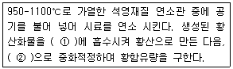
- ① 붕산용액(0.5W/V%), ② 수산화나트륨표준액
- ① 붕산용액(0.5W/V%), ② 티오황산나트륨표준액
- ① 과산화수소(3%), ② 수산화나트륨표준액
- ① 과산화수소(3%), ② 티오황산나트륨표준액
(정답률: 58%)
76. 배출허용기준 중 표준산소농도를 적용받는 항목에 대한 배출가스유량 보정식으로 옳은 것은? (단, Q: 배출가스유량(Sm3/일), Qa: 실측배출가스유량(Sm3/일), Oa: 실측산소농도(%), Os: 표준산소농도(%))
- Q = Qa × [(21-Os)/(21-Oa)]
- Q = Qa ÷ [(21-Os)/(21-Oa)]
- Q = Qa × [(21+Os)/(21+Oa)]
- Q = Qa ÷ [(21+Os)/(21+Oa)]
(정답률: 60%)
77. 가스크로마토그래피에 의한 정량분석에서 이용되는 정량법에 해당되지 않는 것은?
- 표준첨가법
- 보정넓이 백분율법
- 피검성분추가법
- 넓이 백분율법
(정답률: 43%)
78. 굴뚝 배출가스 중 염화수소 분석방법으로 거리가 먼 것은?(관련 규정 개정전 문제로 여기서는 기존 정답인 3번을 누르면 정답 처리됩니다. 자세한 내용은 해설을 참고하세요.)
- 이온크로마토그래프법
- 티오시안산제이수은흡광광도법
- 이온교환법
- 이온전극법
(정답률: 62%)
79. 대기오염공정시험기준상 원자흡수분광광도법(원자흡광광도법)과 자외선 가시선 분광법(흡광광도법)을 동시에 적용할 수 없는 것은?
- 카드뮴화합물
- 니켈화합물
- 페놀화합물
- 구리화합물
(정답률: 61%)
80. 다음은 중금속 분석을 위한 전처리 방법 중 저온회화법에 관한 설명이다. ( )안에 알맞은 것은?
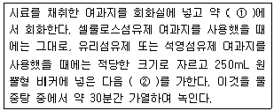
- ① 200℃ 이하, ② 황산(2+1) 70mL 및 과망간산칼륨 (0.025N) 5mL
- ① 450℃ 이하, ② 황산(2+1) 70mL 및 과망간산칼륨 (0.025N) 5mL
- ① 200℃ 이하, ② 염산(1+1) 70mL 및 과산화수소수 (30%) 5mL
- ① 450℃ 이하, ② 염산(1+1) 70mL 및 과산화수소수 (30%) 5mL
(정답률: 50%)
5과목: 대기환경관계법규
81. 대기환경보전법상 조업정지가 공익에 현저한 지장을 줄 우려가 있다고 인정되는 경우에 조업정지 처분에 갈음하여 최대 얼마의 과징금을 부과할 수 있는가?
- 5천만원
- 1억원
- 2억원
- 3억원
(정답률: 52%)
82. 대기환경보전법령상 초과부과금의 부과대상이 되는 오염물질에 해당되지 않는 것은?
- 일산화탄소
- 암모니아
- 불소화합물
- 염화수소
(정답률: 52%)
83. 대기환경보전법규상 다음 연료(kg) 중 고체연료 환산계수가 가장 큰 연료는?
- 무연탄
- 목재
- 이탄
- 목탄
(정답률: 37%)
84. 대기환경보전법령상 특별대책지역안에서 휘발성유기화합물을 배출하는 시설로서 대통령령으로 정하는 시설과 거리가 먼 것은? (단, 그 밖의 시설 등은 고려하지 않는다.)
- 석유화학제품 제조업의 제조시설
- 세탁시설
- 무기화학물 분석 실험실
- 저유소의 저장시설
(정답률: 51%)
85. 대기환경보전법령상 배출시설에서 발생하는 연간 대기오염물질발생량의 합계로 사업장을 분류할 때 다음 중 4종 사업장에 속하는 양은?
- 80톤
- 50톤
- 12톤
- 5톤
(정답률: 61%)
86. 대기환경보전법규상 자동차 운행정지표지에 기재되는 사항으로 거리가 먼 것은?
- 점검당시 누적주행거리
- 운행정지기간 중 주차장소
- 자동차 소유자 성명
- 자동차등록번호
(정답률: 59%)
87. 대기환경보전법규상 오존의 대기오염경보단계별 오염물질의 농도기준에 관한 설명으로 거리가 먼 것은?
- 경보가 발령된 지역내의 기상조건 등을 검토하여 대기 자동측정소의 오존농도가 0.12피피엠 이상 0.3피피엠 미만일 때에는 주의보로 전환한다.
- 오존농도는 24시간 평균농도를 기준으로 한다.
- 해당지역의 대기자동측정소 오존 농도가 1개소라도 경보단계별 발령기준을 초과하면 해당 경보를 발령할 수 있다.
- 중대경보단계는 기상조건을 검토하여 해당지역의 대기자동측정소의 오존농도가 0.5피피엠 이상일 때 발령한다.
(정답률: 61%)
88. 환경정책기본법령상 아황산가스(SO2)의 대기환경기준으로 옳은 것은?(단, 1시간 평균치)
- 0.⑤ppm 이하
- 0.06ppm 이하
- 0.10ppm 이하
- 0.15ppm 이하
(정답률: 48%)
89. 대기환경보전법규상 석탄을 제외한 기타 고체연료 사용시설의 설치기준으로 거리가 먼 것은?
- 배출시설의 굴뚝 높이는 20m 이상이어야 한다.
- 연소재는 반드시 밀폐통을 이용하여 운반하여야 한다.
- 연료는 옥내에 저장하여야 한다.
- 굴뚝에서 배출되는 매연을 측정할 수 있어야 한다.
(정답률: 31%)
90. 대기환경보전법규상 배출허용기준 초과와 관련하여 개선명령을 받는 경우로써 개선하여야 할 사항이 배출시설 또는 방지시설인 경우 사업자가 시·도지사에게 제출하여야 하는 개선계획서에 포함 또는 첨부되어야 하는 사항으로 거리가 먼 것은?
- 배출시설 또는 방지시설의 개선명세서 및 설계도
- 대기오염물질 등의 처리방식 및 처리효율
- 운영기기 진단계획
- 공사기간 및 공사비
(정답률: 43%)
91. 대기환경보전법령상 청정연료를 사용하여야 하는 대상시설의 범위에 해당하지 않는 시설은?
- 산업용 열병합 발전시설
- 전체보일러의 시간당 총 증발량이 0.2톤 이상인 업무용 보일러
- '집단에너지사업법 시행령'에 따른 지역냉난방사업을 위한 시설
- '건축법 시행령'에 따른 중앙집중난방방식으로 열을 공급하고 단지 내의 모든 세대의 평균 전용면적이 40.0m2을 초과하는 공동주택
(정답률: 53%)
92. 악취방지법규상 지정악취물질의 배출허용기준 및 그 범위로 옳지 않은 것은?
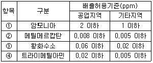
- ①
- ②
- ③
- ④
(정답률: 42%)
93. 대기환경보전법상 대통령령으로 정하는 업종의 배출시설을 운영하는 사업자는 공정 및 설비 등에서 굴뚝 등 환경부령으로 정하는 배출구 없이 대기중에 직접 배출되는 대기오염물질을 줄이기 위하여 배출시설의 정기적인 점검 및 비산배출에 대한 조사 등에 관해 환경부령으로 정하는 시설관리기준을 지켜야 하는데, 이 시설관리기준을 지키지 아니한 자에 대한 벌칙 기준은?
- 7년 이하의 징역 또는 1억원 이하의 벌금에 처한다.
- 5년 이하의 징역 또는 3천만원 이하의 벌금에 처한다.
- 1년 이하의 징역 또는 1천만원 이하의 벌금에 처한다.
- 500만원 이하의 벌금에 처한다.
(정답률: 44%)
94. 대기환경보전법규상 위임업무 보고사항 중 보고횟수가 '수시'에 해당되는 것은?
- 수입자동차 배출가스 인증 및 검사현황
- 자동차 연료 제조기준 적합 여부 검사현황
- 환경오염사고 발생 및 조치 사항
- 첨가제의 제조기준 적합 여부 검사현황
(정답률: 60%)
95. 대기환경보전법규상 비산먼지 발생을 억제하기 위한 시설의 설치 및 필요한 조치에 관한 기준 중 야외탈청 공정의 시설의 설치 및 조치에 관한 기준으로 옳지 않은 것은?
- 탈청구조물의 길이가 15m 미만인 경우에는 옥내작업을 할 것
- 풍속이 평균초속 3m 이상(강선건조업과 합성수지선건조업인 경우에는 5m 이상)인 경우에는 작업을 중지할 것
- 야외 작업 시에는 간이칸막이 등을 설치하여 먼지가 흩날리지 아니하도록 할 것이며, 작업 후 남은 것이 다시 흩날리지 아니하도록 할 것
- 야외 작업 시 이동식 집진시설을 설치할 것
(정답률: 51%)
96. 대기환경보전법규상 암모니아의 각 배출시설별 배출허용기준으로 옳지 않은 것은? (단, 2014년 12월 31일까지 적용되는 기준으로써, ( )는 표준산소농도(O2의 백분율)이다.)
- 화학비료 및 질소화합물 제조시설 : 20ppm 이하
- 무기안료·염료·유연제·착색제 제조시설 : 20ppm 이하
- 폐수·폐기물·폐가스 소각처리시설(소각보일러를 포함한다) 및 고형연료제품 사용시설 : 40(12)ppm 이하
- 시멘트 제조시설 중 소성시설 : 30(13)ppm 이하
(정답률: 36%)
97. 대기환경보전법규상 행정처분기준에 따라 발전소의 발전설비 등에 과징금을 부과하고자 할 때, 그 기준에 관한 설명으로 옳은 것은?
- 1일당 부과금액은 500만원으로 하고, 사업장 규모별 부과계수로서 1종사업장의 경우는 3.0 으로 한다.
- 1일당 부과금액은 500만원으로 하고, 사업장 규모별 부과계수로서 1종사업장의 경우는 2.0 으로 한다.
- 1일당 부과금액은 300만원으로 하고, 사업장 규모별 부과계수로서 1종사업장의 경우는 3.0 으로 한다.
- 1일당 부과금액은 300만원으로 하고, 사업장 규모별 부과계수로서 1종사업장의 경우는 2.0 으로 한다.
(정답률: 46%)
98. 대기환경보전법규상 환경기술인의 준수사항과 가장 거리가 먼 것은?
- 배출시설 및 방지시설을 정상가동하여 오염물질 등의 배출이 배출허용기준에 맞도록 하여야 한다.
- 배출시설 및 방지시설의 운영기록을 사실에 기초하여 작성해야 한다.
- 기업활동 규제완화에 관한 특별조치법상 환경기술인을 공동으로 임명한 경우라도 당해 환경기술인은 해당 사업장에 번갈아 근무해서는 안된다.
- 자가측정시 사용한 여과지는 환경오염공정시험기준에 따라 기록한 시료채취기록지와 함께 날짜별로 보관·관리하여야 한다.
(정답률: 56%)
99. 대기환경보전법에 의거 국가는 자동차로 인한 대기오염을 줄이기 위하여 기술개발 또는 제작에 필요한 재정적, 기술적 지원을 할 수 있는데, 이와 관련된 지원대상 시설과 거리가 먼 것은?
- 저공해 엔진
- 저공해자동차 및 그 자동차에 연료를 공급하기 위한 시설 중 환경부장관이 정하는 시설
- 배출가스저감장치
- 황 함량이 높은 휘발유자동차
(정답률: 57%)
100. 대기환경보전법령상 해당사업자는 확정배출량에 관한 자료 제출을 부과기간 완료일부터 최대 며칠이내에 시·도지사에게 제출하여야 하는가?
- 10일
- 15일
- 30일
- 60일
(정답률: 36%)
먼저, 맑은 여름날 해가 뜬 후부터 오후 최고기온이 나타나는 시간까지는 대기가 안정적인 상태입니다. 이때 대기 중 연기는 지표면에서 상승하는 열기류에 의해 상승하게 됩니다. 이러한 연기 분산형을 fanning이라고 합니다.
그러나 오후 최고기온이 나타나면 대기는 불안정해지게 됩니다. 이때는 대기 중 연기가 지표면에서 상승하는 열기류와 함께 상승하지 않고, 대신 대기 상층으로 상승하게 됩니다. 이러한 연기 분산형을 looping이라고 합니다.
그리고 대기 중 연기가 상승하면서 일부가 지표면과 접촉하여 지표면을 따라 확산하는 현상을 coning이라고 합니다.
마지막으로, 대기 중 연기가 지표면에 머무르면서 분산되지 않고 높이 떠 있는 현상을 lofting이라고 합니다.
따라서, fanning → fumigation → coning → looping 순서가 가장 적합합니다.